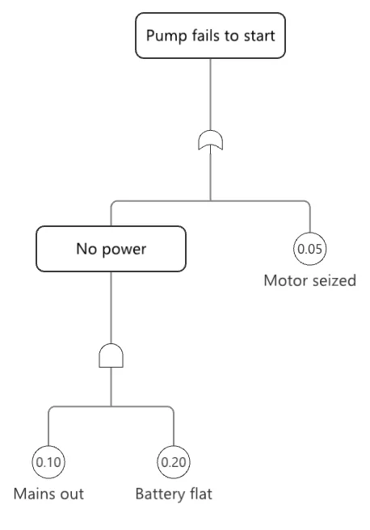

L'expression est libre, l'admission est gouvernée. Chacun peut composer et proposer ; seul un acteur habilité à causer des effets peut commettre. La sécurité de Softanza n'est pas un sac de primitives, c'est cette seule doctrine, appliquée de la même façon partout.
Un seul treillis de capacités, effectful, sensing, compute, inference, et trois postures gardent chaque acte dangereux de la même manière : écrire un fichier, révéler un secret, déployer, lire une clé. Un acteur modèle de langage ne détient que inference, si bien qu'une invite manipulée est supposée passer et rendue inoffensive : un modèle trompé ne peut toujours pas agir, par construction et non par une règle que quelqu'un aurait pensé à écrire. Un secret est un pointeur vers l'endroit où vit sa clé, <secret 'deploy-key' from env:DEPLOY_KEY>, et sa forme imprimée est sa propre expurgation, de sorte qu'aucun journal ni aucune copie ne peut en faire fuir la valeur ; la même clé est révélée à un opérateur humain et refusée à un planificateur en bac à sable.
Autour de la doctrine, une pile d'identité complète des deux côtés, sessions comme jetons, second facteur, clés d'accès, OpenID Connect, SAML, requêtes signées avec fenêtre de fraîcheur ; un registre d'audit chaîné par hachage dans le moteur pour qu'un appelant ne puisse en forger l'empreinte, scellé et vérifié, avec une garde attestée quand une preuve quitte le processus ; une chaîne de détection, des règles de rafale et de séquence à une sentinelle à déclenchement sur front, un incident avec sa chronologie et son rayon d'explosion, et l'endiguement comme acte gouverné. L'escalade en plusieurs sauts est attrapée par l'atteignabilité dans le graphe, ReachesEffectful, BlastRadius(secret), là où un test de drapeau ne voit rien. La cryptographie est portée par le moteur et jamais bricolée.
Le modèle de menaces ne liste chaque garantie qu'avec le test qui la prouve, et un méta-test échoue si ce test disparaît ; ce qui n'a pas de test est nommé comme risque ouvert. Les dus du Compas sont les surfaces classiques que la doctrine n'a pas encore absorbées : une défense unifiée contre les injections, le chiffrement authentifié au repos, et la gouvernance du code étranger, qui est le plan des greffons encore à bâtir.

une chaîne de cinq blocs qu'on ne peut pas réécrire, chacun haché par le moteur. dessiné le 2026-10-01 par le script du site tools/areas-figurative.ring, exécuté dans la bibliothèque au commit 0e72e2e2c · la source(s'ouvre dans un nouvel onglet)
Où il en est
La lecture du Compas Softanza : chaque couloir du domaine noté face au meilleur de sa catégorie, d'après ce que les gardes prouvent (Read from the source on 2026-09-16 -- base/security (25 files) and base/governance; engine crypto.zig, seclog.zig, webauthn.zig, xmldsig.zig + vendored mbedTLS; plan of record doc/design/SOFTANZA_SECURITY.md). Les phrases du Compas sont en anglais, telles qu'il les a écrites.
Most security stacks are a bag of primitives; Softanza's is a doctrine. One capability lattice — effectful · sensing · compute · inference — and three postures gate every dangerous act uniformly, so an LLM actor (holding inference only) is refused a secret, a file write or a deployment by construction, not by a rule someone remembered to write. On top sit a full identity stack (OIDC, SAML, WebAuthn — both sides) and an engine-computed tamper-evident audit ledger. The gaps are a unified injection-defense surface and the still-unbuilt plugin governance — and there is no formal threat-model document yet.
The honesty line on the ratings. Security is heavily guarded — roughly a thousand assertions across the identity, ledger, detection, reveal-gate and multi-hop-escalation scenarios — but the guards live under test/system, test/cluster and test/governance, not a test/security folder, and every guarantee is scoped honestly in its doc. What is not present is a single formal threat model tying those guarantees together.
The one-sentence position. Softanza's security advantage is not a better crypto library — it is a governance doctrine enforced uniformly: one capability lattice under which an LLM cannot act effectfully, a tamper-evident ledger, and a full identity stack, all feeding one CI gate. The gaps that matter are the classic surfaces that doctrine has not yet absorbed — injection defense, data-at-rest sealing, and foreign-code governance.
Ce qu'un artisan en fait, et ce qui se distingue
A governance doctrine enforced uniformly: an LLM actor holding only inference is refused by construction, not by a rule someone remembered to write
An engine-computed tamper-evident audit ledger (hash-chained, seal and verify)
A full identity stack: OIDC, SAML and WebAuthn on both sides
Multi-hop escalation caught by graph reachability (ReachesEffectful, BlastRadius)
Ce qui est dû
A unified injection-defense surface (the OWASP Top-10 core)
Authenticated symmetric encryption (AES-GCM / ChaCha20-Poly1305) and a modern KDF (Argon2)
A formal threat model mapped to guards
Plugin / foreign-capability governance, plus a shipped Vault/KMS backend adapter
Repensé depuis les premiers principes
Ce que Softanza a gardé de ce qui marche, et ce qu'elle a repensé, tel que la bibliothèque l'a écrit dans ses documents de conception et ses narrations.
La manière SoftanzaS'exprimer est libre, être admis est gouverné : chacun peut composer et proposer, mais seul un acteur habilité à produire des effets peut valider.
Gardé des meilleures pratiques
Le modèle de menaces s'appuie sur les Top 10 de l'OWASP (web, modèles de langage, agents) et le NIST CSF 2.0, comme grilles de lecture, pas comme verdicts. source(s'ouvre dans un nouvel onglet)
Une cryptographie éprouvée, pas artisanale : les mots de passe sont stockés avec Argon2id, et les données au repos scellées par un chiffrement authentifié ; un octet modifié n'ouvre rien. source(s'ouvre dans un nouvel onglet)
Des réglages sûrs par défaut : TLS vérifie le pair sauf option explicitement nommée, les valeurs SQL sont liées, jamais concaténées, et un programme se lance sans shell. source(s'ouvre dans un nouvel onglet)
Repensé
Softanza part du principe qu'une injection dans le prompt finira par passer, et la rend inoffensive : un modèle de langage ne détient jamais le droit d'agir. source(s'ouvre dans un nouvel onglet)
Quatre types de capacité et trois postures de confiance décident de la même façon qui peut écrire un fichier, déployer ou lire une clé : un seul mécanisme. source(s'ouvre dans un nouvel onglet)
Un secret est un pointeur vers l'endroit où se trouve la clé. Sa forme affichée est déjà masquée : aucun journal ni affichage ne peut divulguer la valeur. source(s'ouvre dans un nouvel onglet)
Une garantie n'est annoncée qu'avec le test qui la prouve, et un méta-test échoue si ce test manque. Les failles non couvertes sont nommées comme risques ouverts. source(s'ouvre dans un nouvel onglet)
La manière Softanza, exécutée
Ce que Softanza fait autrement dans ce domaine, montré par du code tiré de ses narrations et de ses gardes, et exécuté pour cette page.
12 couloirs, chacun face au meilleur de sa catégorie
Pour chaque couloir : ce qui tourne dans le moteur aujourd'hui, les outils contre lesquels il est juste de le mesurer, et ce qui reste dû.
01Safe-world & capability governanceStrong
In the engine
One capability lattice (effectful/sensing/compute/inference) and three postures (trusted/external/sandboxed) enforce six checkpoints: file commit, secret reveal, secret store, deployment, platform deploy, and StzCheckNoLLMEffectful. Agents rehearse in a stzVirtualFileSystem twin; only a committing actor runs the stzUpdatePlan under three gates.
Measured against
OS capability systemsgVisor / sandboxesOPA (policy)Agent-sandbox patterns
To complete
A genuinely novel, coherent model no mainstream library ships — the LLM actor's lack of effectful is the single fact every gate rests on. The remaining reach is extending it to plugins (lane 12).
02Identity — authn & authzStrong
In the engine
A full modern stack: stzAuth (sessions-as-tokens, TTL, constant-time), TOTP 2FA, WebAuthn passkeys, OIDC client and provider, SAML SP and IdP, and HMAC request signing with a freshness window + nonce replay cache. All crypto verbs engine-backed; ~417 guarded assertions.
Measured against
KeycloakAuth0 / Oktaauthlib / passport.js
To complete
Password-reset-through-the-store is named as remaining; and being an IdP is protocol-complete but has no admin console or federation breadth — it is a library, not Keycloak the product.
03Tamper-evident audit ledgerStrong
In the engine
stzSecurityLedger over engine/src/seclog.zig: a bounded, hash-chained ring whose digest is computed in-engine, so a caller cannot forge it. Seal-to-file, verify (a broken link is named), rich pivots (by actor/subject/kind/trace/outcome), and stzSecurityAttestation for custody.
Measured against
SIEM audit logssigstore / in-totoAWS CloudTrail
To complete
The guarantee is honestly scoped — it detects retroactive edits on exported evidence, not an attacker already running in-process (who can wipe the ring). That limit is stated in the doc and matched by the guards.
04Cryptographic primitivesSolid
In the engine
"Engine-backed, never hand-rolled": crypto.zig ships SHA-256, HMAC-SHA256, PBKDF2 (100k rounds), constant-time compare, CSPRNG, TOTP, ES256/RS256 sign+verify+keypair, b64url; RSA and X.509 go through vendored mbedTLS — a vetted library, not new code.
Measured against
OpenSSLlibsodiumPython cryptography
To complete
A curated subset: no authenticated symmetric encryption (AES-GCM / ChaCha20-Poly1305) for data-at-rest, and only PBKDF2 among password KDFs (no Argon2/scrypt). Hashing, signing and KDF are covered; sealing is not.
05Secret storage & keyringSolid
In the engine
stzSecretStore is the one governed door: register / rotate / revoke, and every Reveal(name, actor) is gated and audited (a refusal emits a security event). Secrets self-redact — config serializes a Descriptor(), never a value — with lazy env/file/vault sources.
Measured against
HashiCorp VaultAWS Secrets ManagerKMS
To complete
The redaction and governed-reveal defaults are arguably ahead of Vault's, but no real backend adapter ships (proven only against the in-memory stzVaultResolver), and there is no scheduled rotation.
06Policy governance & security rulesSolid
In the engine
stzSecurityGraph models the security surface as actors/tools/secrets/edges and answers ReachesEffectful, BlastRadius(secret) and PathExists — catching multi-hop escalation a flag check misses. stzSecurityRule is-a graph rule and feeds the one CI gate (stzRuleReport) alongside code, agent and org domains.
Measured against
OPA / RegosemgrepIAM Access Analyzer
To complete
The reachability architecture is distinctive, but only three security rules ship (two ERROR, one WARN) — a thin catalogue next to OPA's or semgrep's ecosystems. The seam is ready for many more.
07Events, redaction & OCSF telemetrySolid
In the engine
stzSecurityEvent is a typed record over a closed kind-catalog, carrying a MITRE ATT&CK technique field and an OCSF JSON export for SIEM interop. The redaction law is enforced at construction — an event records a descriptor, never a value — so telemetry cannot leak a secret.
Measured against
OCSFSplunk / SIEMSigma
To complete
Redaction is strong, but there is no PII detection / classification / DLP surface — the law protects known secrets, not free-text data it has never been told about.
08Detection & incident responseSolid
In the engine
A full runtime chain: stzDetection (burst / sequence / any, with a corroboration law) → stzSecuritySentinel (edge-triggered) → stzIncident (timeline, path, blast radius) → stzResponsePlan (containment as a governed act — an LLM's MayCommit is false) → stzSecurityDrill (adversary emulation vs a real spawned app).
Measured against
SOAR platformsWazuhSigma rules
To complete
Only three detection shapes ship (stated to cover the common patterns); no anomaly/ML detection and no Sigma-rule interop for the wider detection ecosystem.
09Attestation & evidence custodySolid
In the engine
stzSecurityAttestation makes a custody statement over a sealed ledger, and evidence crosses process boundaries as a sealed + attested file (the drill's findings, an incident's proof). Export is treated as a sensing act — an LLM may analyze evidence, it may not export it.
Measured against
in-toto / SLSAsigstorechain-of-custody tooling
To complete
Custody is internal (self-signed over the ledger hash); interop with an external attestation ecosystem (in-toto layouts, transparency logs) is not yet a story.
10TLS / transport securityPartial
In the engine
mTLS and TLS ride vendored mbedTLS, with a smoke guard (test/cluster/mtls_narrated.ring) and engine fuzz_tls.zig. Certificate helpers (key, SHA-256 fingerprint, info, readability) live in the security module.
Measured against
OpenSSL / BoringSSLrustlsmbedTLS
To complete
Transport lives in the cluster / reactive / appserver planes, not security, and is shallow: no cert-lifecycle management, OCSP or cipher-policy governance. It works; it is not a managed TLS surface.
11Input validation & injection defensePartial
In the engine
The primitives exist, scattered: HTML/URL escaping in encode.zig, the XML parser closing XXE by construction, request signing against forgery. Real defenses, in the right places.
Measured against
OWASP ESAPI / Top 10DOMPurifyparameterized-query libs
To complete
No unified injection-defense surface in security: no central validation/sanitization governance, no SQLi / command-injection / path-traversal helpers, no CSRF/XSS toolkit. The OWASP-shaped lane is distributed, not owned.
12Plugin / foreign-capability governanceEmerging
In the engine
A designed doctrine — "a plugin is a governed foreign capability" — that would extend the capability lattice to third-party code (SOFTANZA_PLUGIN_PLAN.md + a comparative study).
Measured against
WASM sandboxingPyodidecapability-based FFI
To complete
Design docs and a recovered archive only — base/plugin/ is not loaded in stzBase.ring. The seam that would make foreign code safe is planned, not shipped (this lane's full rating is the Extensibility group's page).
Deux lectures. La carte de l'Atlas (v21, 2026-09-30) donne 6 Strong, 5 Solid, 0 Partial, 1 Emerging ; la page du groupe, lue le Read from the source on 2026-09-16 -- base/security (25 files) and base/governance; engine crypto.zig, seclog.zig, webauthn.zig, xmldsig.zig + vendored mbedTLS; plan of record doc/design/SOFTANZA_SECURITY.md, note ses couloirs 3, 6, 2, 1. Les couloirs ci-dessous sont ceux de la page du groupe ; la carte est la lecture la plus récente.
Ce qui est dû, dans l'ordre du rendement
Les manques, classés par ce qu'ils rapportent et non par leur taille ; la valeur est l'effet sur la portée de la bibliothèque, l'effort une lecture d'ingénieur.
Tier A — foundational
A unified injection-defense surface
Central validation / sanitization governance covering XSS, SQLi, command injection and path traversal — the OWASP Top-10 core. The escaping primitives already ship; what is missing is one owned surface that a caller reaches for and the CI gate can check.
Valeur · élevéeEffort · moyen
Authenticated symmetric encryption + a modern KDF
AES-GCM or ChaCha20-Poly1305 for data-at-rest, and Argon2 alongside PBKDF2. The secret store governs access but cannot seal a value at rest without an AEAD — the one crypto gap that limits the keyring.
Valeur · élevéeEffort · moyen
Tier B — cheap and high-leverage (mostly trust)
A formal threat model, mapped to guards
The module makes honestly-scoped guarantees (the ledger doc names its in-process limit), but there is no STRIDE/threat-model document. Writing one — each guarantee → the assertion that proves it — turns implicit trust into an auditable claim.
Valeur · élevéeEffort · faible
A shipped Vault / KMS backend adapter
The stzVaultResolver seam is proven only against the in-memory reference. One real adapter (HashiCorp Vault or a cloud manager) turns the keyring from a reference design into a deployable one.
Valeur · moyenneEffort · moyen
Scheduled rotation + password reset
Both are named as remaining: automatic secret rotation on a schedule, and password-reset flowing through the store. Small additions to surfaces (RotateQ, stzAuth) that already exist.
Valeur · moyenneEffort · faible
Tier C — strategic, larger
Ship plugin / foreign-capability governance
Wire the designed plugin doctrine into the capability lattice and the CI gate, so third-party code becomes governed capability rather than trust. The distinctive safe-world model's natural next frontier.
Valeur · stratégiqueEffort · élevé
Grow the security-rule catalogue
Three rules today. The reachability seam is built to carry many — a real catalogue (misconfig, over-privilege, exposure patterns) feeding the one CI gate would make it a live policy engine against OPA/semgrep, not a demonstrator.
Valeur · élevéeEffort · moyen
Anomaly detection + DLP
Beyond the three fixed detection shapes: statistical/anomaly detection over the ledger, Sigma-rule interop, and a PII-classification / DLP layer so redaction protects data it was never explicitly handed.
Valeur · moyenneEffort · élevé
La conception, telle que la bibliothèque l'a écrite (7)
Les documents de conception de ce domaine, lus dans le dépôt au commit 4a184e6f0 : ce que chacun est, son plan, et le lien vers le texte entier.
Softanza Security
140 lignes · 6 sections · écrit le 2026-07-22, revu le 2026-07-23
Carte consolidée de la sécurité dans Softanza, traitée comme gouvernance sous un seul vocabulaire, expression libre et admission gouvernée : un treillis de capacités à quatre genres et trois postures de confiance filtre de même une écriture de fichier, un déploiement ou la révélation d'une clé, les composants étant logés dans base/security.
Le plan
The thesis
The load-bearing rule (why agents cannot hurt you)
The security surface (what exists, and where it lives)
The central secrets governance — `stzSecretStore`
What modern software development requires — and where Softanza stands
167 lignes · 6 sections · écrit le 2026-09-29, revu le 2026-10-05
Modèle de menaces écrit le 2026-09-29 qui transforme la boussole de maturité sécurité en affirmation auditable : chaque garantie nomme la garde qui la prouve, les risques ouverts sont listés avec l'échelon qui les fermera, et OWASP et le NIST CSF servent de lentilles, non de verdicts.
Note de conception, au statut construit, pour les secrets et identifiants dans base/security : un secret n'est pas une chaîne mais une valeur gouvernée qui se caviarde partout, se résout paresseusement depuis une source telle qu'une variable d'environnement ou un fichier, et ne se révèle que sous gouvernance.
388 lignes · 5 sections · écrit le 2026-07-24, revu le 2026-07-25
Étude de conception, au statut six phases construites plus OIDC, passkeys et SAML, qui analyse ce que Better Auth enseigne et y répond par la gouvernance : couture d'adaptateur pour la persistance, méthodes d'authentification enfichables, primitives durcies, vrai second facteur, et authentification reliée à l'autorisation.
Le plan
1. The honest starting point
2. What Better Auth actually is (the load-bearing ideas, not the feature dump)
3. The five lessons — each mapped to a pattern Softanza already has
Wire mTLS between nodes -- implementation plan (R8 rung #6)
122 lignes · 5 sections · écrit le 2026-07-15, revu le 2026-07-17
Plan de réalisation, marqué terminé (tranches 1-4, 2026-07-15), d'un TLS mutuel entre nœuds Softanza avec mbedTLS intégré sur le réacteur libuv plutôt que Schannel, apportant le chiffrement en transit et l'identité mutuelle par certificat que la seule signature des requêtes ne donnait pas.
Softanza -- vulnerability and incident reporting runbook
96 lignes · 5 sections · écrit le 2026-09-30
Procédure écrite le 2026-09-30, fermant le risque R13 du modèle de menaces, pour signaler une vulnérabilité activement exploitée selon le Cyber Resilience Act européen : si le règlement atteint le projet et à quel titre, ce qui déclenche l'horloge, les délais de 24 et 72 heures, et les questions laissées au juriste.
Audit daté du 2026-06-13 suivant chaque endroit où la bibliothèque de base chargeait une extension externe du langage hôte (uuid, fastpro, html, libcurl, libuv), constatant que les cinq ont été remplacées par le moteur Zig de l'arbre ou abandonnées, une boucle asynchrone multiplateforme restant un jalon futur distinct.
Le plan
Inventory (sites where an external Haro extension is loaded)
Les narrations que la bibliothèque a écrites sur ce domaine, chacune exécutée bloc par bloc avant d'être publiée ici.
Guarding Secrets & Credentials2026 · seriesWhen you deployed to the target sites, one line carried a promise we hadn't yet kept:
Governing a Project's Security2026 · seriesThe secrets narration showed a single stzSecret — a value that redacts itself and reveals only to an effectful actor. A real project has many secrets, several sites, and more than one actor, and the risk isn't one leaked key — it's the scatter: keys created...
The Front Door2026 · seriesEvery application eventually needs to answer "who is this?" And almost every application answers it badly the first time, not through carelessness but because the field is full of details that look optional and are not.
Answerable Forever2026 · seriesstzGovernance.RecordDecision carried this comment:
Attestation and Export2026 · seriesI1 made the ledger hash-chained and sealable, which makes a file tamper-evident. That is necessary and not sufficient. An auditor holding the file still has to ask: who exported this, when, over what range, under which key, and how do I check it? Those ques...
Detection over Sequences2026 · seriesSoftanza is full of rules. A graph rule asks whether a sandboxed actor can reach an effectful capability. A posture invariant asks what is true of the system right now. An org rule asks whether one position both approves and executes.
The Drill2026 · seriesSeven phases built a system that witnesses, judges, correlates, contains and attests. Every one of them was guarded — but always with events the guard itself created.
The Security Event2026 · seriesSoftanza detects a great deal. A WebAuthn signature counter that fails to advance — the textbook cloned-credential signal. A SAML assertion presented twice. An HMAC that does not match. A nonce reused for the same key.
The Incident2026 · seriesI4's case says what fired and photographs the moment. That is the right thing to keep, and the wrong thing to hand a human. An investigator needs the story: who, in what order, how far they could have gone, what is exposed, and what has been done about it.
The Security Ledger2026 · seriesIt usually means a text file. Anyone who can write to it can rewrite it, and nothing about the file objects. "Trust me, it's in the log" is not a security property — which is why the industry built hash chains, transparency logs and WORM storage around the...
The Governed Response2026 · seriesWitness, detect, reconstruct — none of those change anything. Contain does: it revokes a session, locks an account, rotates a secret. This is where a security system is most useful and most dangerous, and it is exactly where the library already has a doctrine:
The Rest of the Seams2026 · seriesI2's first pass wired six classes and stopped. The design doc's section 7 table kept the rest of the rows in plain sight, and the completion document said so as the system's largest honest gap: a detection sees only what a seam emits.
The Seams2026 · seriesThree unrelated things happen to a running application: someone probes a signed-request gateway, someone guesses at the login door, and a sandboxed agent reaches for a production secret. Every one of those was already detected by Softanza.
The Sentinel2026 · seriesI3's detections judge when asked. Somebody still has to ask, and an investigation that begins with "did anyone look at the ledger today?" has already lost. The sentinel asks on a cadence — and, crucially, speaks only when something changes.
Les classes de ce domaine (39)
Chaque classe mène à sa page de référence : ses méthodes, chacune avec un exemple exécuté.
Compas Softanza : Read from the source on 2026-09-16 -- base/security (25 files) and base/governance; engine crypto.zig, seclog.zig, webauthn.zig, xmldsig.zig + vendored mbedTLS; plan of record doc/design/SOFTANZA_SECURITY.md.